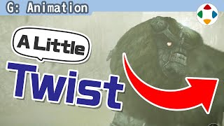
速览
把脖子往旁边转一下——他刚才的动作是不是很机械？这种转法不太好。旋转多用 X 轴、Y 轴、Z 轴表示。像这样绕竖轴的转动是 Y 轴旋转；但即使实际就是那样的转动，只用 Y 轴旋转也是 NG，就是刚才那种脖子动作。做人的动作等时，要意识双轴旋转：例如把头转向一侧时，低头再转就是 X 轴与 Y 轴并用；侧倾再转就是 Z 轴与 Y 轴并用。省略了为什么，只讲要点：总之动非机械的东西时，要意识双轴旋转那样的扭转。手腕也是，单轴旋转像钻头不够味，稍微倾斜再转就像样，很简单。其实还要动联动的部分：例如拧动作时肩、锁骨会联动；像拧开摩托油门的动作，也要并用手腕移动、动到肩和锁骨。旋转速度方面，3D 工具函数曲线默认生成的也许看起来就像样，但更进一步，例如稍微错开两轴的时机来旋转会更好；偶尔加上反动也可以。也许你隐约感觉到了：即使旋转的终点相同，过程不同就能带来完全不同的性格——同样把头转向一侧，从下、从上、从正侧，看起来都有点不同。这次简单作为小技巧介绍。另外做转头时也要意识视线：表情还没加上时容易把脸转向正面，但视线好好加上后，那么大的转向可能就不合适了。
1. 单轴旋转很机械 0:03
把脖子往旁边转一下——刚才他的动作是不是很机械？这种转法不太好。
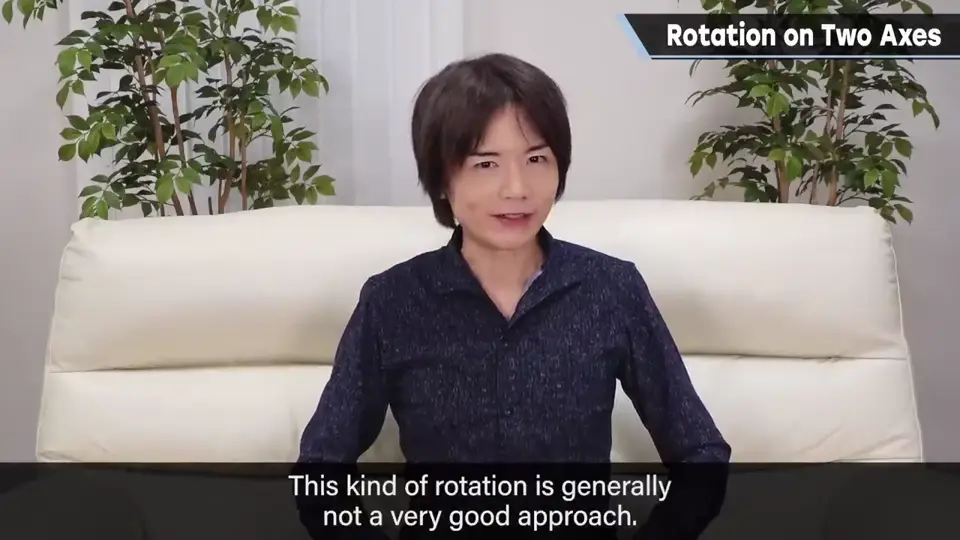
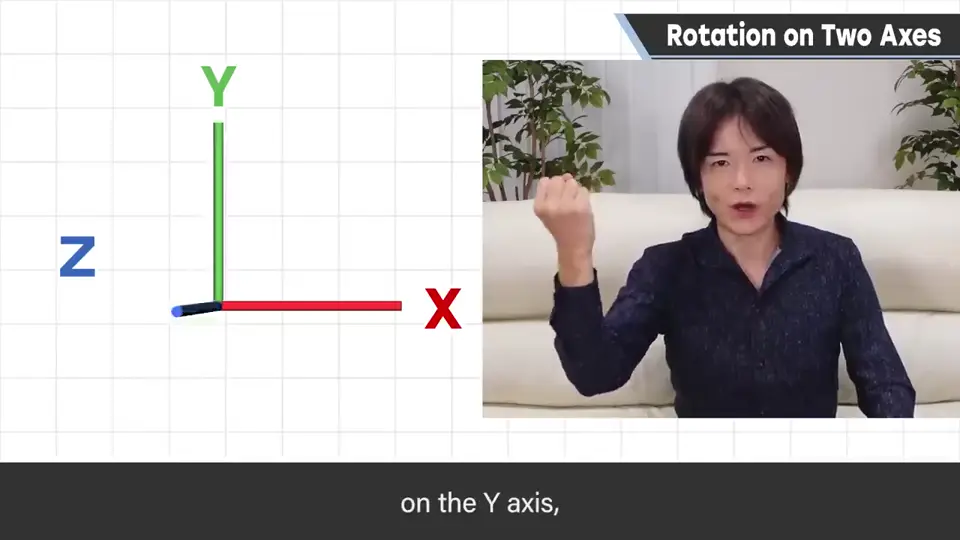
旋转多用 X 轴、Y 轴、Z 轴表示。像这样绕竖轴的转动是 Y 轴旋转。
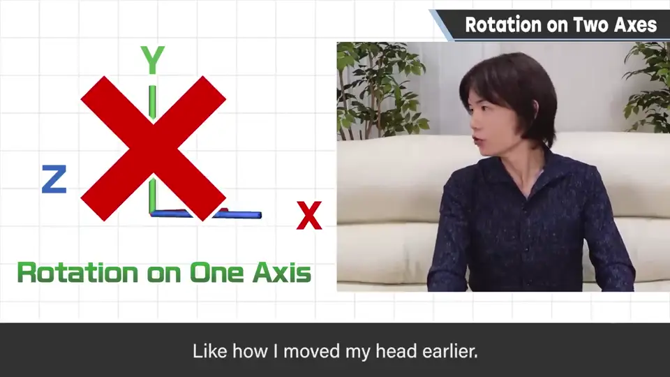
2. 意识双轴旋转 0:48
做人的动作等时，要意识双轴旋转。例如把头转向一侧时：
- 低头再转：X 轴与 Y 轴并用。
- 侧倾再转：Z 轴与 Y 轴并用。
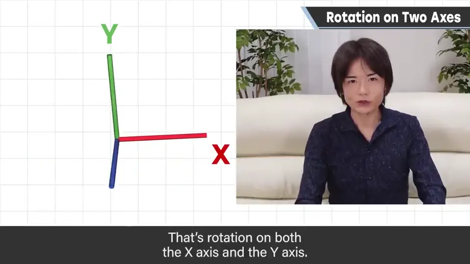
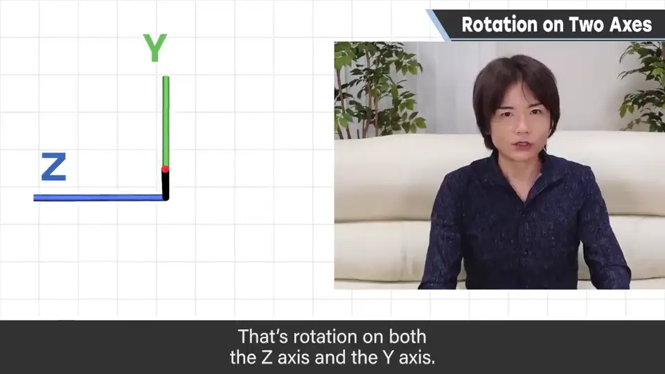
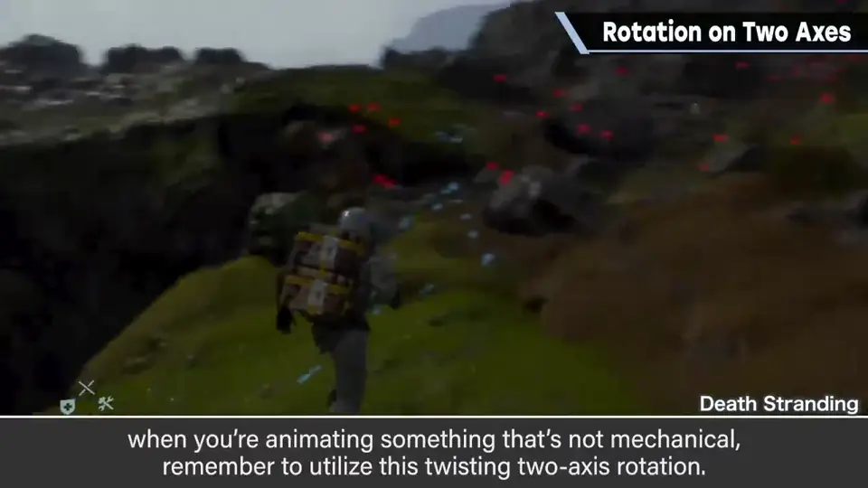
3. 手腕与联动 1:20
手腕也是：单轴旋转像钻头，不够味；稍微倾斜再转就像样了，很简单。
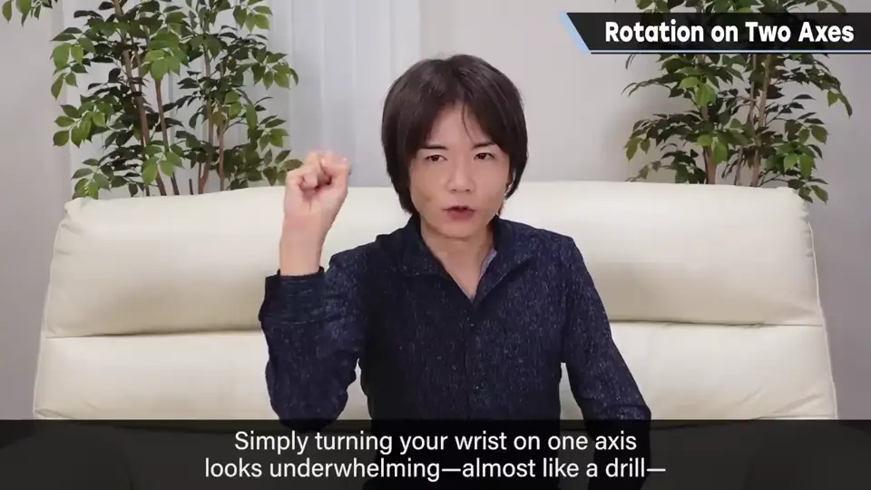
其实还要动联动的部分：例如拧的动作，肩和锁骨会联动；像拧开摩托油门，也要并用手腕移动、动到肩和锁骨。
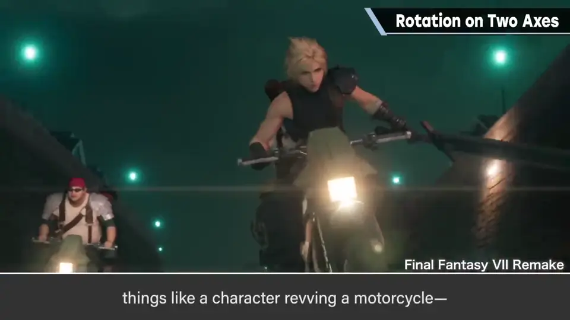
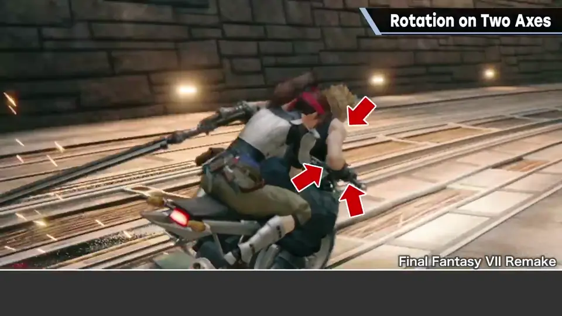
4. 速度与时机 1:57
旋转速度方面，3D 工具函数曲线默认生成的也许看起来就像样。
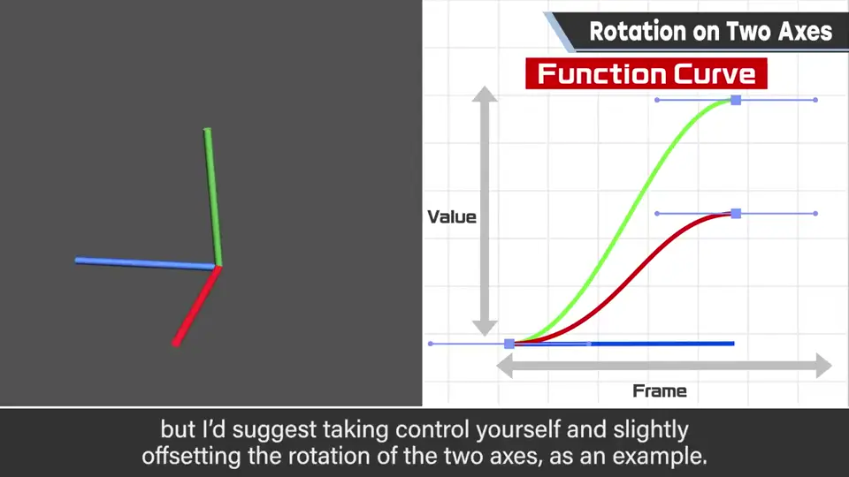
5. 过程决定性格 2:18
也许你隐约感觉到了：即使旋转的终点相同，过程不同就能带来完全不同的性格。
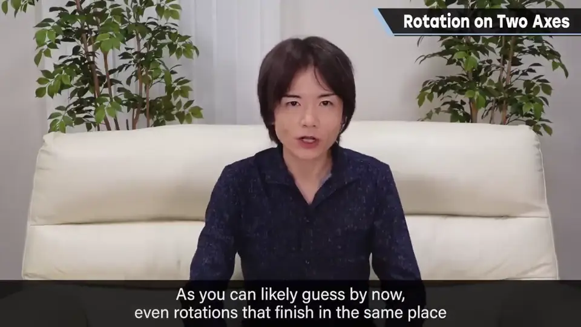
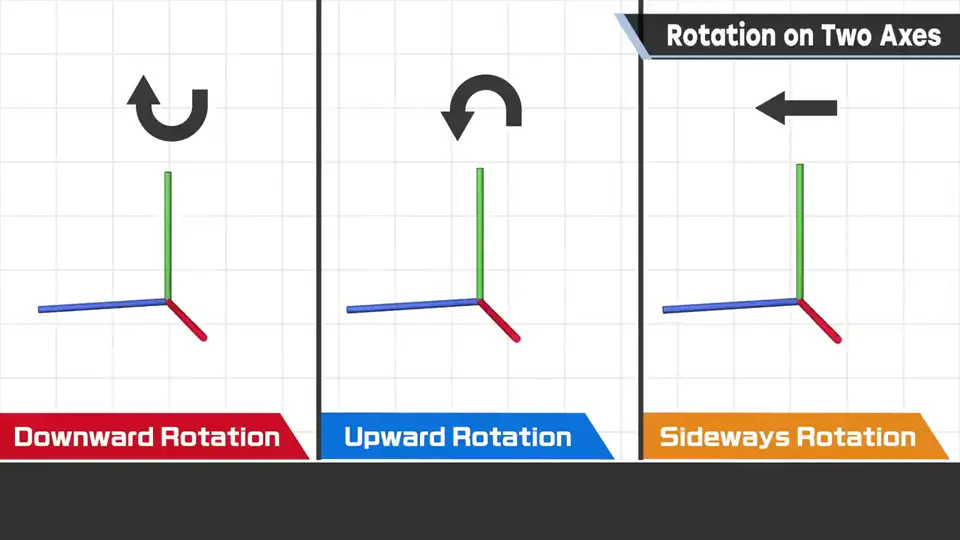
同样把头转向一侧，从下、从上、从正侧，看起来都有点不同。
6. 别忘了视线 2:50
做转头时也要意识视线：表情还没加上时，容易把脸转向正面。
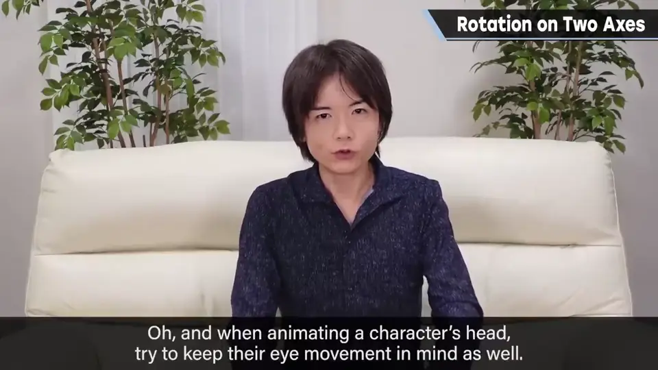
但视线好好加上后，那么大的转向可能就不合适了。
自测题
1. 为什么不能只用 Y 轴转头？
看起来很机械；非机械的东西要意识双轴扭转。 0:40
2. 转头的两种双轴组合是什么？
低头再转（X+Y）、侧倾再转（Z+Y）。 1:05
3. 让旋转更进一步的技巧有哪些？
错开两轴时机、偶尔加反动、联动肩与锁骨；终点相同但过程不同带来不同性格。 2:10